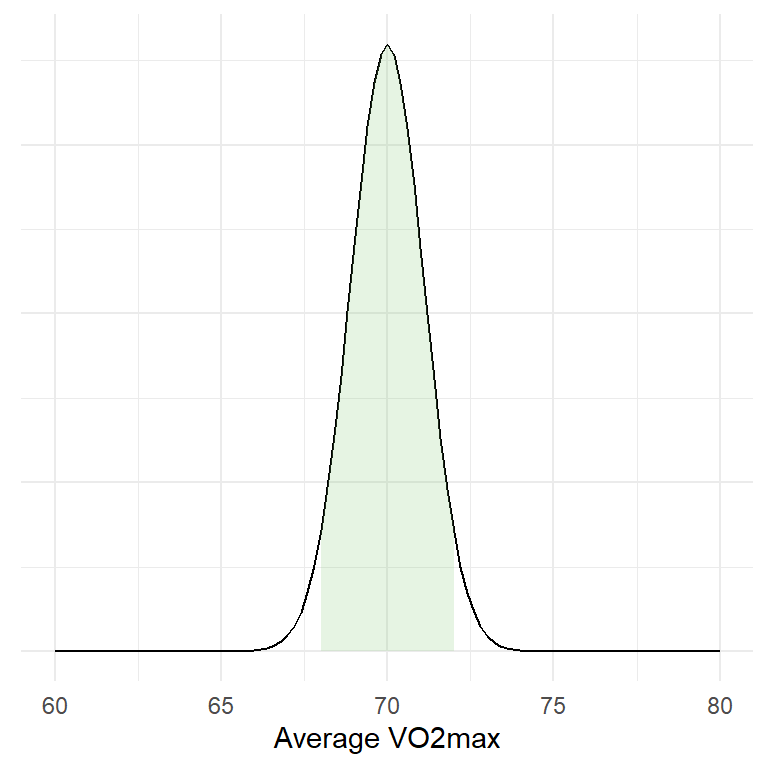

Chapter 18 Samples, populations estimates and their uncertainty
Scientific studies only occasionally gather all available data regarding some phenomena under study. All possible data are not available to us due to, e.g., practical or economic reasons. We, therefore, have no direct way of studying all elderly people’s responses to training or the relationship between strength and performance in all cyclists, etc. Thus, the scientist faces the challenge of concluding based on a limited set of observations.
All possible observations are often referred to as the population while the data set we have access to is called the sample. When we make claims about the population using a sample, we draw inference. Our ability to accurately draw inference (or conclusions) about the population based on our sample is determined by how we have gathered data. A sample is unbiased when it represents the population. Through random sampling from the population, we can be pretty sure that we, in most cases, have a representative sample free from bias. Bias may be a consequence of some systematic aspect of our sampling scheme, e.g., when studying healthy individuals’ responses to exercise, recruitment to the study may introduce bias as we are more likely to recruit participants who want to do exercise. Possibly, recruited individuals would respond differently compared to individuals not so willing to do exercise (see (Spiegelhalter 2019, Ch. 3).
We can characterize a sample using descriptive statistics. For example, a continuous variable such as VO2max can be described based on its central tendency (like the mean, \(\bar{y}\)) and variation (standard deviation, \(s_y\)). Such characteristics serve us for a simple description of the sample and as estimates of characteristics of the population. These estimates can help us make claims about the population with a specified degree of certainty.
18.1 Reading instructions
Before going further, I suggest reading Chapters 7-10 in Spiegelhalter (Spiegelhalter 2019). These chapters are a great start for understanding the concepts discussed below.
18.2 Descriptive statistics in R
18.2.1 Simulating data in R
R is great because you can create data! In the examples below we will generate data, you can copy and paste the code into your R session to run it and answer questions in this lesson.
When we generate data in R we need to set the seed to make the random number generator create the same numbers every time. Basically, R generate numbers and if we want R to generate the same numbers every time we have to tell R where to start.
This means that before each simulation I will include:
set.seed(1)The number within set.seed is important as it defines where R starts generating numbers.
18.3 A simple example
Let’s say that we collect data on VO2max values in trained cyclists (ml kg-1 min-1). We are interested in the average. First we simulate all possible values:
set.seed(1)
vo2max <- rnorm(100000, 70, 5)All possible values?? Yes, we create a distribution of values of VO2max in trained cyclists based on the rnorm-function. rnorm simulates random numbers (100000 in this case) based on an average (in this case 75) and standard deviation (in this case 5). This population is now stored in the object vo2max.
We conduct our study and collect data on 20 participants. This represents only 2% of all possible numbers!
Below we use the sample function, this function draws a sample of a fixed size from our collection of random numbers. We store it in an object called samp
set.seed(1)
samp <- sample(vo2max, 20, replace = FALSE)replace = FALSE makes sure that we do not sample the same numbers more than once. This way our sampling resembles what a real life study would do.
The samp object now contain numbers from a possible study. The study has recruited 20 randomly chosen cyclists and measured their VO2max. Let’s describe the sample.
In R we can describe the data using multiple methods, first we will calculate summary statistics.
m <- mean(samp)
s <- sd(samp)We can also use the summary function.
summary(samp)Let’s make a graph of the sample. We can represent the sample using points, the code below may be a bit complicated, it is mostly cosmetics.
library(tidyverse) # Needed for making the plot!
df <- data.frame(samp = samp)
df %>%
# Plots our samples on the x axis, and sets all y to 1.
ggplot(aes(samp, y = 1)) +
# Adds points and "jitter" on the y axis
geom_point(position = position_jitter(height = 0.2)) +
# Scales the y axis to better plot the data
scale_y_continuous(limits = c(0,2)) +
# Set the name of the x axis
labs(x = "VO2max") +
# The code below modifies the theme of the plot, removing
# the y axis
theme(axis.title.y = element_blank(),
axis.text.y = element_blank(),
axis.ticks.y = element_blank(),
axis.line.y = element_blank())Another plot can be the box-plot, similar to the above we can do:
df %>%
# Plots our samples on the y axis, and sets all x to 1.
ggplot(aes(x = 1, samp)) +
# Adds the boxplot
geom_boxplot(width = 0.5) +
# Scales the x axis to better plot the data
scale_x_continuous(limits = c(0,2)) +
# Set the name of the y axis
labs(y = "VO2max") +
# The code below modifies the theme of the plot, removing
# the x axis
theme(axis.title.x = element_blank(),
axis.text.x = element_blank(),
axis.ticks.x = element_blank(),
axis.line.x = element_blank())The boxplot (or box-and-whiskers plot (Spiegelhalter 2019, Ch. 2)) summarizes the data and plots the median, the inter-quartile range minimum and maximum, and any outliers.
We can also plot the data as a histogram.
df %>%
# Plots our samples on the y axis, and sets all x to 1.
ggplot(aes(samp)) +
# Adds the histogram
geom_histogram(binwidth = 3, color = "blue", fill = "lightblue") +
# Set the name of the y axis
labs(x = "VO2max", y = "Count") Both the statistical summaries (created with mean, sd and summary) and the plots are descriptive analyses of the sample. We still have not made any claims about the population.
18.4 Inference about the population
When doing a study, we are really interested in what we can say about the population (all possible values). In other words, how we can draw conclusions about the unknown, based on our data. This is were inferential statistics comes in.
As we have an estimate of the mean in the population, we may say that based on our sample we believe the mean is close to mean(samp). It is very likely the the mean in the population is not exactly that. Let’s try another sample:
set.seed(2)
samp2 <- sample(vo2max, 20, replace = FALSE)
# Calculate the mean
m2 <- mean(samp2)As we can see there is going to be some differences due to the fact that every time we draw a new sample (or conduct another study), we will get a slightly different estimate of the mean. How about the variation:
s2 <- sd(samp2)
# Print the results from calculation of SD
c(s, s2)Indeed, slightly different.
We could continue to sample in this way and record every outcome to build a distribution of means. A smarter way is to create a for-loop. This is a basic building block in programming, we tell the computer to do a task multiple times and store the results in a nice format. We will sample size = 20 and calculate the mean. The results will be stored in a data frame.
# set the seed
set.seed(123)
# create the data frame
results <- data.frame(mean = rep(NA, 10000))
# The rep function creates a vector full of NA
# each NA can be replaced with a mean
# Second we build the for loop
for(i in 1:10000){
results[i, 1] <- mean(sample(x = vo2max, size = 20, replace = FALSE))
}The results from this process can be plotted using ggplot2
ggplot(data = results, aes(mean)) +
geom_histogram(fill = "lightblue", color = "gray40", binwidth = 1) +
theme_minimal()What did just happened? We basically conducted 1000 studies, from each study we calculated the mean and stored them. Most of the means were very close to 70 as we can see in the graph. The distribution of the means is bell-shaped, actually the distribution looks like something that we can call a Normal distribution.
Distributions can be described in different ways depending on what distribution we are takling about. The most commonly used, the normal (or Gaussion) distribution can be described by the mean and the standard deviation.
As the distribution of means is approximately normal we can determine where most of the means are. Let’s say that we are interested in determining a range where 95% of the means can be found. To do this we can use a theoretical distribution created by estimates from the distribution (the mean and standard deviation).

95% of all means are under the shaded area! This corresponds to a range of values that can be calculated in R:
lower <- mean(results[,1]) - 1.96 * sd(results[,1])
upper <- mean(results[,1]) + 1.96 * sd(results[,1])What does this mean? Well, we have drawn 1000 samples from our bag of numbers (representing all possible outcomes). We then calculated the mean of each sample and created a distribution of means. The mean of means is very, very close to the true mean.
mean(vo2max)
mean(results[,1])We have also calculated a range were 95% of all means are located, we did this by approximating the actual values using the normal distribution.
18.5 Estimation of the sampling distribution
What we have done above is a very theoretical example as we never do 1000 studies in real life. We will never get a distribution of means from many studies. However we can estimate this theoretical distribution of means using a sample!
This is one of the most important concepts in statistics! This means that by doing one study we can estimate the results of doing many studies. This is the basis of frequentist statistics.
18.5.0.1 The standard error of a sample is an approximation of the standard deviation of the sampling distribution
The headline says it all. Basically, using the sample we can calculate the standard deviation, the standard deviation in turn can be used to calculate the standard error. The standard error is an estimate of the standard deviation of the theoretical distribution of means. Let’s see how it works out!
Using R we can simulate this concept. We will create a new set of random samples (or studies) and calculate statistics from them.
# Copy and paste the code if you want the results
# set the seed
set.seed(123)
# create the data frame
results <- data.frame(mean = rep(NA, 1000),
sd = rep(NA, 1000))
# The rep function creates a vector full of NA
# each NA can be replaced with a mean
# Second we build the for loop
for(i in 1:10000){
samp <- sample(x = vo2max, size = 20, replace = FALSE)
results[i, 1] <- mean(samp)
results[i, 2] <- sd(samp)
}
results %>%
# Calculate the standard error of each sample
mutate(se = sd/sqrt(20)) %>%
# Make a graph containing estimates and empirical values
ggplot(aes(mean)) + geom_histogram(binwidth = 0.5) +
# Add a line representing the standard deviation of the distribution of means
geom_segment(aes(y = 350,
yend = 350,
x = mean(mean),
xend = mean(mean) + sd(mean)),
lty = 1, color = "green", size = 2) +
# Add text to discribe the line
geom_text(aes(x = mean(mean),
y = 300,
label = paste("Empirical: Mean ",
round(mean(mean), 0),
" + SD: ",
round(sd(mean), 1) )),
color = "green") +
# Add a line representing the average standard error of each sample
geom_segment(aes(y = 160,
yend = 160,
x = mean(mean),
xend = mean(mean) + mean(se)),
lty = 1, color = "blue", size = 2) +
# Add text to describe the above
geom_text(aes(x = mean(mean),
y = 220,
label = paste("Estimate: Mean ",
round(mean(mean), 0),
" + average SE: ",
round(mean(se), 1) )),
color = "blue") In the graph (you will see it you run the code), the blue line represents the average of what we estimate with each sample and the green line represent the actual values of the sampling distribution.
The variation (spread) of the sampling distribution corresponds to the standard error of the mean in each sample. At least, in the long run, the standard error of the mean is a pretty good estimate of the variation in the distributions of means. From a mathematical point of view, the standard error of the mean is calculated as:
\[SE = \frac{s}{\sqrt{n}}\] where \(s\) is the sample standard deviation, \(n\) is the number of observations.
Remember that we can use the standard deviation to calculate a range of values containing 95% of all values in a normal distribution. This can be done using a single sample! When calculating this using a sample we create a confidence interval!
18.5.1 A confidence interval for the mean
A confidence interval for the mean can be calculated as:
\[lower~limit=Mean - 1.96 * SE\] \[upper~limit=Mean+1.96 * SE\]
(This assumes that we are using the normal distribution).
The interpretation of the confidence interval is that 95% of confidence intervals, created using repeated sampling will contain the population mean. But unfortunately, we do not know if our specific interval do so.
The interpretation follows from the fact that we estimate the variation in the theoretical sampling distribution. Five percent of the time we will be wrong.
To test if the theory is correct, lets calculate confidence intervals from our simulated data and see how many times we catch the true mean.
# Creat new variables with upper and lower limits of the confidence interval
cis <- results %>%
# Using the normal distribution
mutate(lower.limit = mean - 1.96 * sd/sqrt(20),
upper.limit = mean + 1.96 * sd/sqrt(20)) %>%
# Test if the true mean is within the limits
# If the true mean is above the lower limit and below the upper limit then TRUE
# otherwise FALSE
mutate(true.mean = if_else(mean(vo2max) > lower.limit & mean(vo2max) < upper.limit,
TRUE, FALSE))
# Plot the data, only plotting 200 data points to make it suitable for every computer
cis[1:200, ] %>%
ggplot(aes(seq(1:nrow(.)),
y = mean,
color = true.mean, # set a specific color
alpha = true.mean)) + # and transparency to
# intervals containing and not containing the true mean
# add a line showing the true mean
geom_hline(yintercept = mean(vo2max)) +
# add errorbars showing each interval
geom_errorbar(aes(ymin = lower.limit, ymax = upper.limit)) +
# scale the colors and transparency. Intervals not containing
# the true mean are red.
scale_color_manual(values = c("red", "black")) +
scale_alpha_manual(values = c(1, 0.2)) +
# Set label texts
labs(x = "Sample",
y = "Mean",
alpha = "Contains\nthe true mean",
color = "Contains\nthe true mean") +
# Change the theme
theme_minimal()
# Calculate the proportions of intervals not containing the true mean
sum(cis$true.mean == FALSE) / sum(cis$true.mean == TRUE)
# Almost 5%!Ok so we are really close. This means that if we do a study 10000 times and calculate the average and its confidence interval, in about 5% of the studies we will be missing the true mean. Seen from the other side, about 95% of the times, our interval will contain the true mean.
18.5.1.1 Why isn’t it 5%?
It may be due to the fact that the normal distribution is not a good distribution when sample sizes are low. We can instead use the \(t\)-distribution. (This distribution has something to do with beer!)

Figure 18.1: The t-distribution has something to do with beer!
The t-distribution changes it shape depending on how many data points we have in our sample. This means that a smaller sample size will be reflected in the estimated sampling distribution through a wider interval. In the code below we have changed the calculation of the 95% confidence interval to using the t-distribution instead.
# Creat new variables with upper and lower limits of the confidence interval
cis <- results %>%
# Using the t-distribution
mutate(lower.limit = mean - qt(0.975, 20-1) * sd/sqrt(20),
upper.limit = mean + qt(0.975, 20-1) * sd/sqrt(20)) %>%
# Test if the true mean is within the limits
# If the true mean is above the lower limit and below the upper limit then TRUE
# otherwise FALSE
mutate(true.mean = if_else(mean(vo2max) > lower.limit & mean(vo2max) < upper.limit,
TRUE, FALSE))
# Plot the data, only plotting 100 data points to make it suitable for every computer
cis[1:200, ] %>%
ggplot(aes(seq(1:nrow(.)),
y = mean,
color = true.mean, # set a specific color
alpha = true.mean)) + # and transparency to
# intervals containing and not containing the true mean
# add a line showing the true mean
geom_hline(yintercept = mean(vo2max)) +
# add errorbars showing each interval
geom_errorbar(aes(ymin = lower.limit, ymax = upper.limit)) +
# scale the colors and transparency. Intervals not containing
# the true mean are red.
scale_color_manual(values = c("red", "black")) +
scale_alpha_manual(values = c(1, 0.2)) +
# Set label texts
labs(x = "Sample",
y = "Mean",
alpha = "Contains\nthe true mean",
color = "Contains\nthe true mean") +
# Change the theme
theme_minimal()
# Calculate the proportions of intervals not containing the true mean
sum(cis$true.mean == FALSE) / sum(cis$true.mean == TRUE)
# Almost 5%!Again, almost!
The two distributions (normal and t) are very similar when we are getting closer to sample sizes of \(n=30\).
18.6 Sample size and confidence intervals
The width of confidence intervals are determined by the mean, standard deviation and the sample size. If the sample size gets lower the width will increase. This means that we will have less precision. We will still cover the true mean 95% of the time (if we repeat our study) but the range of possible values of the true mean will be wider.
18.7 Sampling distribution of IQ
IQ values are normally distributed with median 100 (since the distribution is normal, this should be very close the the mean) and standard deviation of 15. Using a sample from the population we can calculate a 95% confidence interval. We will do this with n=5, n=25 and n=100. You will have to execute the code. A 95% confidence interval based on the normal distribution can be calculated as
# set the seed
set.seed(1)
# A population of numbers
pop <- rnorm(100000, mean = 100, sd = 15)
# Sampling from the distribution
n5 <- sample(pop, 5, replace = FALSE)
n25 <- sample(pop, 25, replace = FALSE)
n100 <- sample(pop, 100, replace = FALSE)
# n = 10
mean_n5 <- mean(n5)
s_n5 <- sd(n5)
error_n5 <- qnorm(0.975) * s_n5/sqrt(5)
# n = 25
mean_n25 <- mean(n25)
s_n25 <- sd(n25)
error_n25 <- qnorm(0.975) * s_n25/sqrt(25)
# n = 100
mean_n100 <- mean(n100)
s_n100 <- sd(n100)
error_n100 <- qnorm(0.975) * s_n100/sqrt(100)Above we used the qnorm function. Test what the result is if you only run round(qnorm(0.975), 2). Above I used a commonly used rounded value, do they correspond?
We can collect the pieces and create a plot using this code:
df <- data.frame(sample.size = c(5, 25, 100),
mean = c(mean_n5, mean_n25, mean_n100),
error = c(error_n5, error_n25, error_n100))
df %>%
ggplot(aes(as.factor(sample.size), mean)) +
geom_errorbar(aes(ymin = mean-error, ymax = mean + error), width = 0.2) +
geom_point(size = 3) +
theme_minimal()What can you say about the effect of sample size on the confidence of an estimate?
Above we used the normal distribution to calculate the confidence interval. It would be more correct to use the t-distribution.
The corresponding code for calculating the error based on the t-distribution would be
qt(0.975, df = n - 1) * s/sqrt(n)
Adopt the code above and graph the different confidence intervals beside each other.
Here is a possible solution18.8 A hypothesis test
We know that a random sample will have a mean close to the center of the population distribution (100 in the case above). We want to know if chess players (\(Chess\)) have higher IQ scores than average people \(Average\). We can create an alternative hypothesis stating that
\[H_A: Chess \neq Average\]
The null hypothesis that we are comparing to is
\[H_0: Chess = Average\]
We collect data from chess players (\(n=24\)). Use the data below to test \(H_0\).
| Chess player | IQ |
|---|---|
| 1 | 129 |
| 2 | 101 |
| 3 | 98 |
| 4 | 89 |
| 5 | 103 |
| 6 | 107 |
| 7 | 123 |
| 8 | 117 |
| 9 | 114 |
| 10 | 109 |
| 11 | 110 |
| 12 | 99 |
| 13 | 101 |
| 14 | 102 |
| 15 | 130 |
| 16 | 121 |
| 17 | 129 |
| 18 | 115 |
| 19 | 107 |
| 20 | 109 |
| 21 | 107 |
| 22 | 96 |
| 23 | 98 |
| 24 | 102 |
Try to calculate the sample average and a confidence interval and answer these questions:
- What is the average IQ among chess players?
- What is your best guess about the population average of chess players?
- What does the confidence interval say about your hypothesis?
18.9 Using a confidence interval when planning a study
We can calculate the mean change from pre- to post-training in the cycling study for \(\dot{V}O2_{max}\).
For this exercise, use the data set cyclingStudy.xlsx, you will find it in the exscidata package. The variables of interest are subject, group, timepoint and VO2.max. In the time-point variable, meso3 are the post-training values and pre are the pre-training values.
Calculate the mean change in percentage for the whole data set together with the sample SD. Then calculate a confidence interval.
How do you interpret the confidence interval?
Here is a possible solutionLet’s say that we are designing a new study. We want to be able to show a difference between pre- to post-training in \(\dot{V}O2_{max}\) of 2% as this might be an important difference. Given the standard deviation that you have calculated above, how many participants should be recruit to the study to be able to detect a difference of 2%?
Here you can try to calculate the lower limit of a 95% confidence interval given a standard deviation equal to what you calculated above and a mean change of interest of 2% using many different alternatives for the sample size.
Here is a possible solutionTry to answer the following questions:
- How could the above information help you when designing a study?
- Why is there a relationship between sample size and the lower bound of the confidence interval?